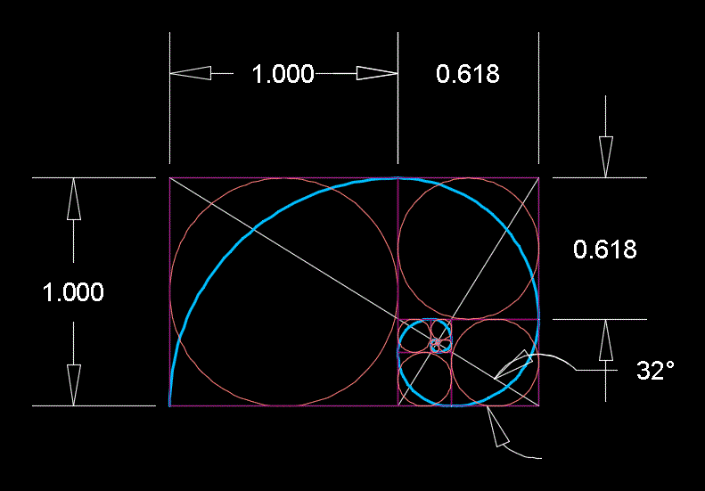
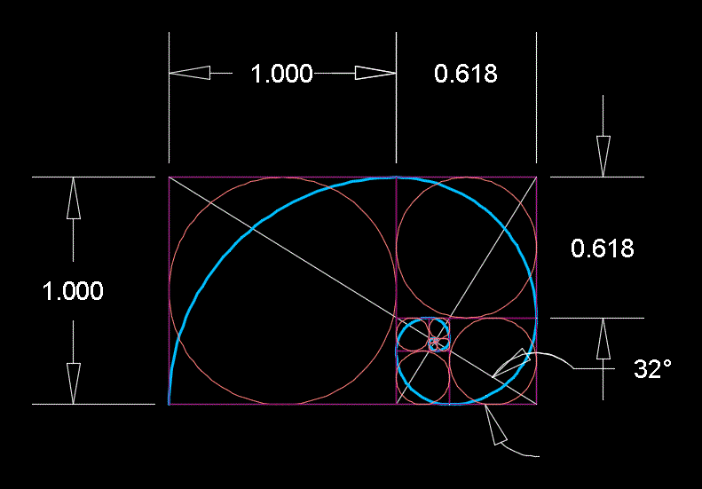
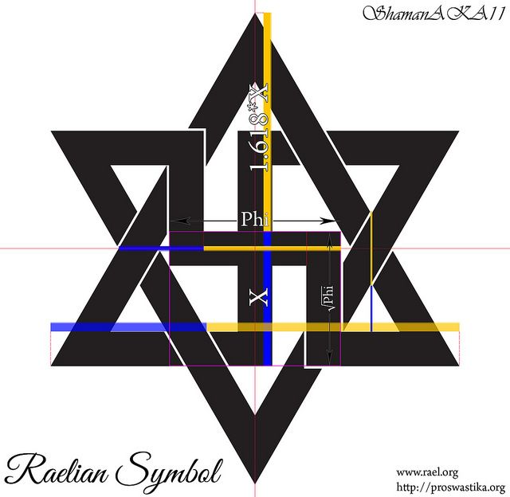
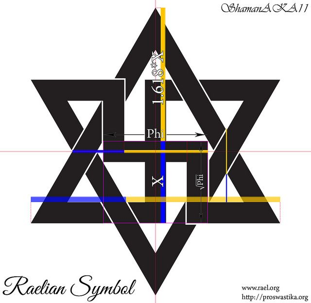

 

Religion and The Golden Ratio
The golden ratio – a sacred number linking the past to the present Golden ratio. Divine proportion in a shell.There is one thing that ancient Greeks, Renaissance artists, a 17th century astronomer and 21st century architects all have in common – they all used the Golden Mean, otherwise known as the Golden Ratio, Divine Proportion, or Golden Section. Precisely, this is the number 1.61803399, represented by the Greek letter Phi, and considered truly unique in its mathematical properties, prevalence throughout nature, and its ability to achieve a perfect aesthetic composition.According to astrophysicist Mario Livio in his book ‘The Golden Ratio: The Story of PHI, the World's Most Astonishing Number’ : Some of the greatest mathematical minds of all ages, from Pythagoras and Euclid in ancient Greece, through the medieval Italian mathematician Leonardo of Pisa and the Renaissance astronomer Johannes Kepler, to present-day scientific figures such as Oxford physicist Roger Penrose, have spent endless hours over this simple ratio and its properties. But the fascination with the Golden Ratio is not confined just to mathematicians. Biologists, artists, musicians, historians, architects, psychologists, and even mystics have pondered and debated the basis of its ubiquity and appeal. In fact, it is probably fair to say that the Golden Ratio has inspired thinkers of all disciplines like no other number in the history of mathematics.
The Bible
It’s basically God’s signature on His creation.The cross itself is in Golden Ratio proportions. God’s signature in nature that divides things into perfect proportions is also in His Word and literally lands on the verse that tells us to RIGHTLY DIVIDE. His Golden ratio is seen most prominent in the division of the Old and New Testament, where the Bible RIGHTLY DIVIDES. When I got saved, I asked God to show me the Golden Ratio in the Bible. I figured if it’s everywhere in nature, it must be in the Bible. He led me to the table of contents and showed me the division of the Old and New Testament. To my amazement, it was in my face the whole time. The Bible is absolutely divine and I thank God for this awesome revelation.